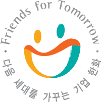

다 함께 행복하고 모두가 한 가족이 되는 세상 만들기, 바로 한화의 꿈입니다.

한화의 사회공헌 정신은 50년 전 전쟁의 포화 속으로 거슬러 올라갑니다. 시커멓게 그을려 초토화된 국토 위에 희망의 싹마저 잘려 나갔던 시절, 국가경제를 재건하고자 화약산업을 일구었던 그룹의 창립이념에도 인류와 국가를 먼저 생각하는 고귀한 정신이 깃들어 있었습니다.나보다는 '우리'를 가슴에 품었던 믿음, 지금 이 순간보다는 '내일'을 꿈꾸었던 한화의 정신으로 이제 또 다른 미래의 희망을 재건하고자 합니다.


밝은세상 만들기 기금은 어떻게 마련될까요?
MACHING GRANT
한화건설은 직원들의 후원금에 비례하여 회사에서도 후원금을 추가 기부하는 선진 모금제도인 매칭 그랜트를 통해 사회 공헌 기금을 마련하고 있습니다. 한화그룹은 "밝은 세상 만들기 기금" 으로 모금제도를 활용하고 있으며 2004년부터 회사에서 기부하는 매칭 비율을 100%에서 150%로 확대하여 더 많은 모금을 조성하고 있습니다